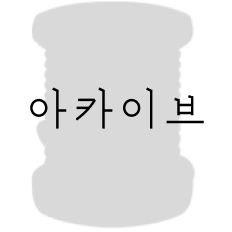

문장을 이어가면 새로운 짜임이 만들어져요.
지금 떠오르는 감정을 적어보세요.
A
🪡
0/500
패턴 변화가 잘 반영되지 않으시나요?
기준표정 다시 등록하기

입력 가능한 글자 수 제한이 초과되었어요.
마치기를 눌러 뜨개물을 완성하세요.
마치기


입력 가능한 글자 수 제한이 초과되었어요.
마치기를 눌러 뜨개물을 완성하세요.
감정의 리듬을 따라 색과 형태가
다른 코로 번역됩니다.
예시 패턴 위에서 표정 태그의 흐름을 확인해보세요.
눈·눈썹·입꼬리의 기본 기준값으로 감정 태그가 계산됩니다.

기록된 감정 정보를 정리하고 있어요.
기록된 감정 정보를 정리하고 있어요.

